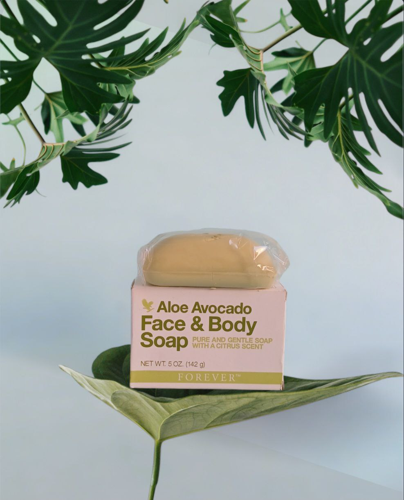
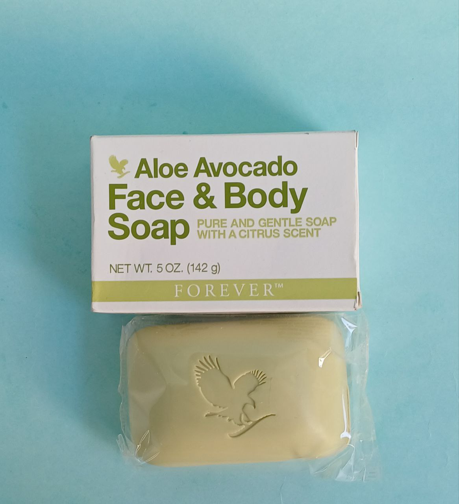
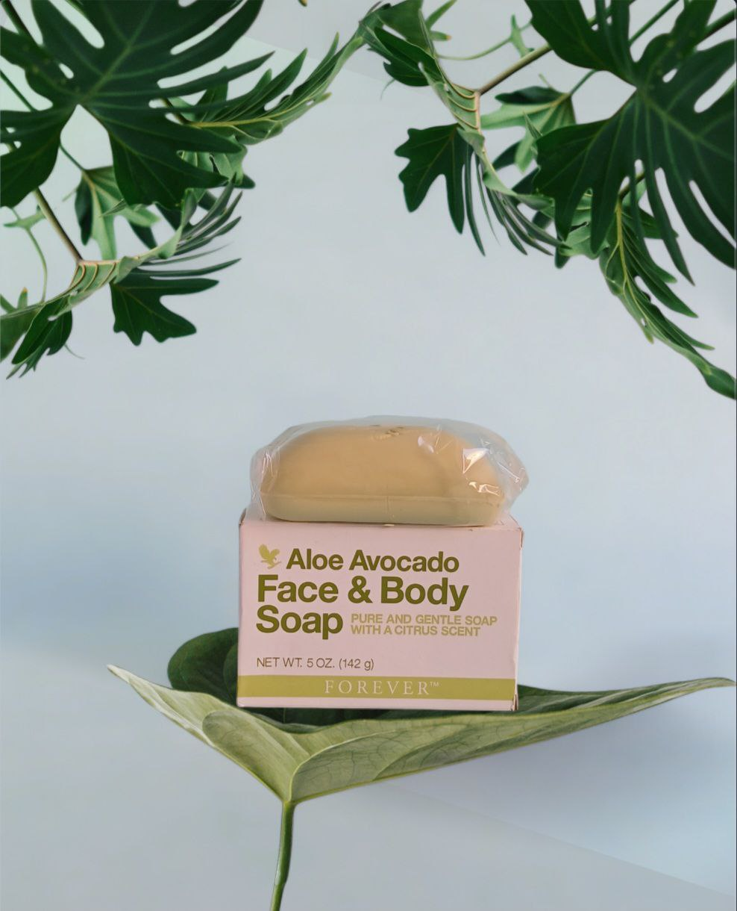
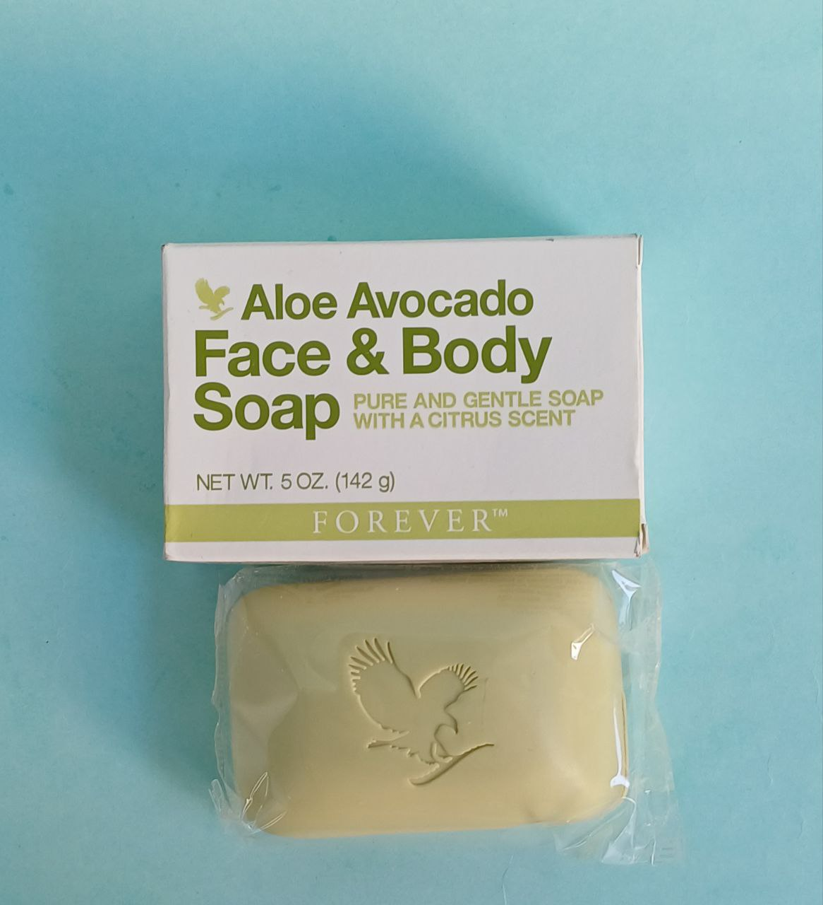
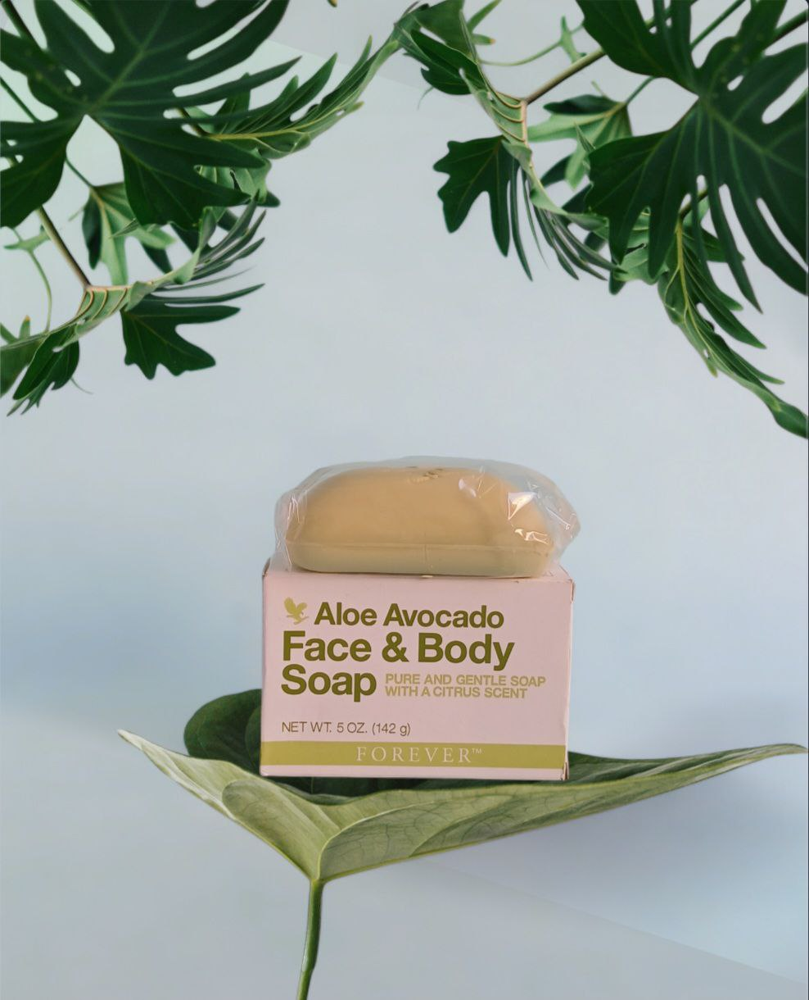
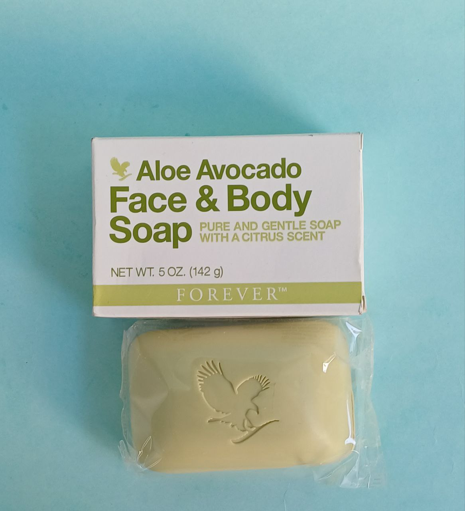
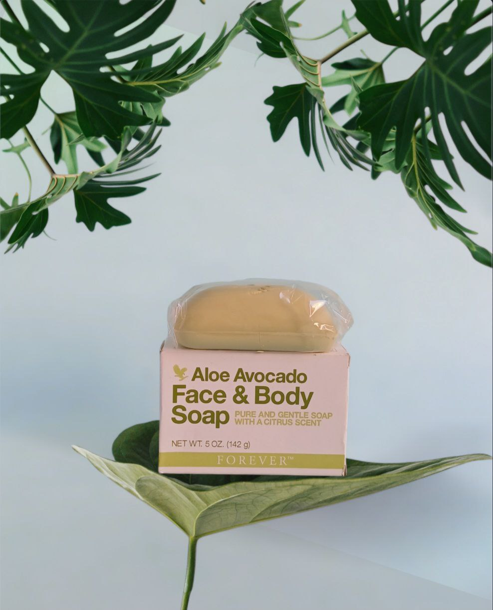
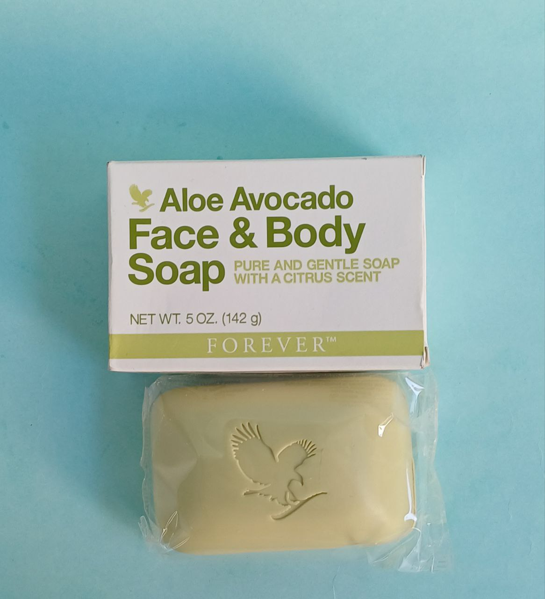

تنظيف لطيف يترك البشرة ناعمة ونضرة.
البشرة النظيفة والصحية هي أساس الجمال الطبيعي. وليس هناك طريقة أفضل لتحقيق هذا الجمال من المكونات الطبيعية مثل زيت الأفوكادو النقي والصبار من مزارع فوريفر الخاصة. يرطب صابون ألو أفوكادو الوجه والجسم أثناء تنظيفه، مما يمنحك بشرة أكثر نعومة وإشراقًا.
الأفوكادو فاكهة غنية بالعناصر الغذائية تحتوي على العديد من الفيتامينات والمعادن المفيدة، بما في ذلك الفيتامينات A و C و E. محتوى الأفوكادو عالي الدهون يخلق قاعدة غنية للصابون ويساعد حتى البشرة الجافة على الشعور بالنعومة بعد التنظيف. يحتوي صابون الأفوكادو للوجه والجسم على صبار نقي مقطوع باليد للمساعدة في ترطيب وتهدئة البشرة، مما يترك بشرتك رطبة طوال اليوم.
صابون ألو أفوكادو للوجه والجسم من فوريفر ينعم ويغذي ويرطب ويستخدم للذين لديهم بشرة حساسة. لطيف بما يكفي لوجهك أو لجسمك بالكامل، ستساعد رائحة الحمضيات المنتقاة حديثًا على إيقاظك في الصباح وستستمر نعومة صابون الأفوكادو للوجه والجسم طوال اليوم.
لأكثر من 40 عامًا، سعت فوريفر إلى الحصول على مكونات عالية الجودة لتزويدك بالمنتجات التي تجمع بين العلم والطبيعة معًا للبشرة التي تبدو وجميلة.